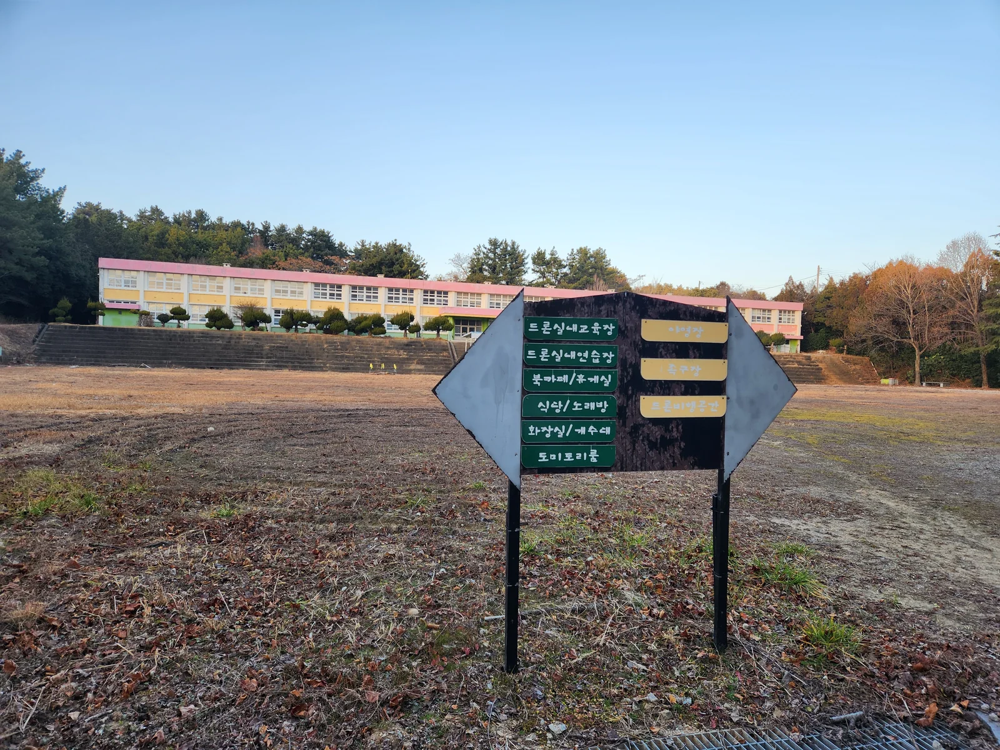

전남 고흥, 오래된 학교가 새로운 공간이 됩니다
다문화·생활체육 융합을 중심에 둔, 고흥의 새로운 공공 교육 거점.
💡 코리아파크가 다른 이유
이 시설의 공식 사용 목적은 "다문화 및 생활체육 융합 교육센터"입니다. 주민과 외국인이 함께 어울리는 운동장·실내 체육 공간(탁구·다트·당구)을 이미 보유하고 있고, 여기에 드론 자격증 교육과 캠핑·레저까지 한 공간에서 운영됩니다.
도심에서는 찾기 어려운 탁 트인 실외 운동장과 비행장 — 고흥이기에 가능합니다.



Zone A — Outdoors
캠핑·글램핑
운동장을 활용한 오토캠핑, 차박, 글램핑 사이트. 텐트 간 15m2 이상 거리 확보.

Zone B — Indoors
교육·체험·매점
1F 웰컴센터 + 특산물 매점 + 레이저사격장. 2F 드론 교육장 + VR 체험관.

Zone C — Rooftop
드론 훈련장
드론 이착륙 훈련장, 전망대, 드론 낚시 장비 대여소.
🚦 단계별 오픈 일정
현재 진행 상황부터 정식 오픈까지 구체적 시점으로 보여드립니다.
Phase 0 · 진행 중
2026 현재 ~ Q3
인프라 정비 · 소방시설 구축 / 2층 수도 완공 / 시설 정비
전기: 1~2층 완료 · 수도: 1층 완료, 2층 공사 중
✅ 드론 자격증 사전 수강 문의 접수 중
전기: 1~2층 완료 · 수도: 1층 완료, 2층 공사 중
✅ 드론 자격증 사전 수강 문의 접수 중
Phase 1 · LIVE 예정
2026 Q4
교육원 등록 완료 + 드론 자격증 과정 개강
국토교통부 전문교육기관 등록 · 1~3종 / 5일 집중 또는 주말 6회
국토교통부 전문교육기관 등록 · 1~3종 / 5일 집중 또는 주말 6회
Phase 2
2027 Q1~Q2
외국인 근로자 한국어 · 안전 교육 + 캠핑 · 글램핑 1차 오픈
Phase 3
2027 Q3~
드론 낚시 · 레이저사격 · 전체 프로그램 정식 오픈